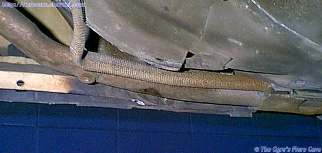
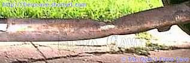

Go Home
Site Map
Go Home
Site Map
EEK! They crushed my pipe...
Crushed coolant pipes on Fiero are extremely common and the amount of damage is not always obvious. These pipes must be checked for damage any time you are having overheat problems.
How bad can the damage be?
Below is a photo of one of my pipes after a local tire shop ruined it.

At fist look the bend doesn't look very bad. However when you drop the pipe and look...
The pipe is crushed almost completely shut.
When looking for pipe damage, always check the area from the rear support back very carefully. That section of pipe should be straight. If the section between the support and drain bung is bent at all then drop the pipe so you can see the top.
Why does this happen?
Some fool almost always causes damage to the cooling pipes with a jack or lift. Running over road debris could do it but most times it's a jackass with a jack.
The biggest problem is that there is nothing structural in that area. The rocker panel is just plastic and odds are good they will wreck that to.
How can I protect the car/pipe?
There's not a huge amount you can do but some things help.
- I only buy tires and stuff where I can see them work on the car. Places like NTB where I go into the work area. You have to watch all chain service places like a hawk. Even the ones that claim everyone is ASE certified.
- Watch the temp gauge as soon as you leave any service place. If they have crushed the pipe you will probably run hot or even over heat very quickly. I didn't get 3 miles with the pipe above. (The car was already warm.) I was able to get back to the shop with the heater on full. (It got just enough additional cooling to prevent boil over.)
- IF you start to overheat, return to the service center AT ONCE! Don't let it go even a day or they could fight you on it and win. The burden will be on you to prove it. The longer you let it go the harder that will be.
The first picture I took above was taken on their alignment rack before I left the place. It comes in really handy to carry a camera at al times. (Many car insurance carriers recommend this anyway.)
One idea I've been playing with... Building some type of guard I can attach next to the pipe. Then the guard can take the jacking instead of the rocker and pipe. I haven't had time or material to mess with that yet.
Repair
Ideally you want to put in a new pipe that isn't bent but that isn't always an option. I had to put a section of rubber hose on mine.
If you go the hose route... Double clamp is a must and be VERY careful to get the clamps tight! (IE 4 Clamps not 2 for this repair.) The hose will blow off easily if the clamp is at all loose. Check it regularly. (Yes, I had this happen a few months after the repair.)
As soon as I get a chance, I will epoxy a wire ring around the pipe. This will give it a ridge like at the normal hose fittings so the hose can't blow off. It can still leak but will be much harder to blow off.
Or... Use a wire, bridge between support bracket and extra (5th) clamp on loose metal end to keep from blowing apart on highway.
You will also need to support the back section of the pipe in many cases. There are a few ways to do that. On the pipe above I ran a heavy wire from the clamp that hold the hose to the thermostat neck (L4) and hung it from a bracket that supports the fuel vent line.